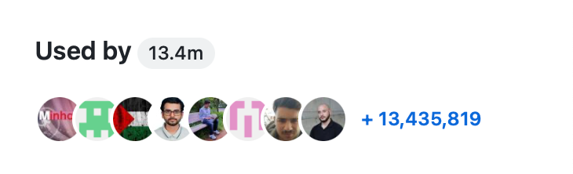

You can use the dependency graph to identify all your project's dependencies. The dependency graph supports a range of popular package ecosystems.
The dependency graph is a summary of the manifest and lock files stored in a repository and any dependencies that are submitted for the repository using the dependency submission API. For each repository, it shows:
For each dependency, you can see the version, license information, the manifest file which included it, and whether it has known vulnerabilities. For package ecosystems supporting transitive dependencies, the relationship status will be displayed and you can click "", then "Show paths", to see the transitive path which brought in the dependency.
You can also search for a specific dependency using the search bar. Dependencies are sorted automatically with vulnerable packages at the top.
For information on the supported ecosystems and manifest files, see Dependency graph supported package ecosystems.
When you create a pull request containing changes to dependencies that targets the default branch, GitHub uses the dependency graph to add dependency reviews to the pull request. These indicate whether the dependencies contain vulnerabilities and, if so, the version of the dependency in which the vulnerability was fixed. For more information, see About dependency review.
The dependency graph automatically parses dependencies by analyzing manifests and lock files in your repository. You can also submit data yourself. For more information, see How the dependency graph recognizes dependencies.
Repository administrators can enable or disable the dependency graph for repositories. For more information, see Managing security and analysis settings for your repository.
Repository administrators can enable or disable the dependency graph for repositories. See Enabling the dependency graph.
For public repositories, the dependency graph lists dependents. These are other public repositories that depend on the repository or on packages that it publishes. This information is not reported for private repositories.
Some repositories have a "Used by" section in the sidebar of the Code tab. This section shows the number of public references to a package that were found, and displays the avatars of some of the owners of the dependent projects. Clicking any item in this section takes you to the Dependents tab of the dependency graph.
Your repository will have a "Used by" section if:

The "Used by" section represents a single package from the repository. If you have admin permissions to a repository that contains multiple packages, you can choose which package the "Used by" section represents. See Changing the "used by" data for a repository.
You can use the dependency graph to: